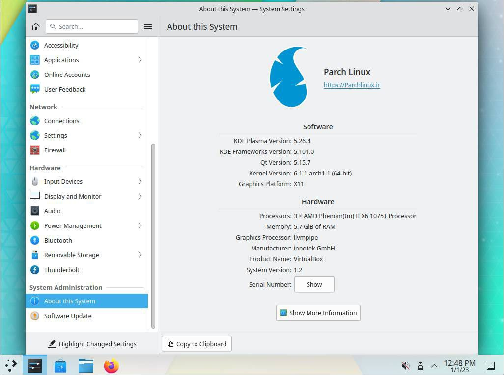

Parch Linux
Another distro based on Arch
The parch is an os based on the Arch Linux, Parch tries to look like the Arch but with an easy and Graphical installation.

The parch is an os based on the Arch Linux, Parch tries to look like the Arch but with an easy and Graphical installation.